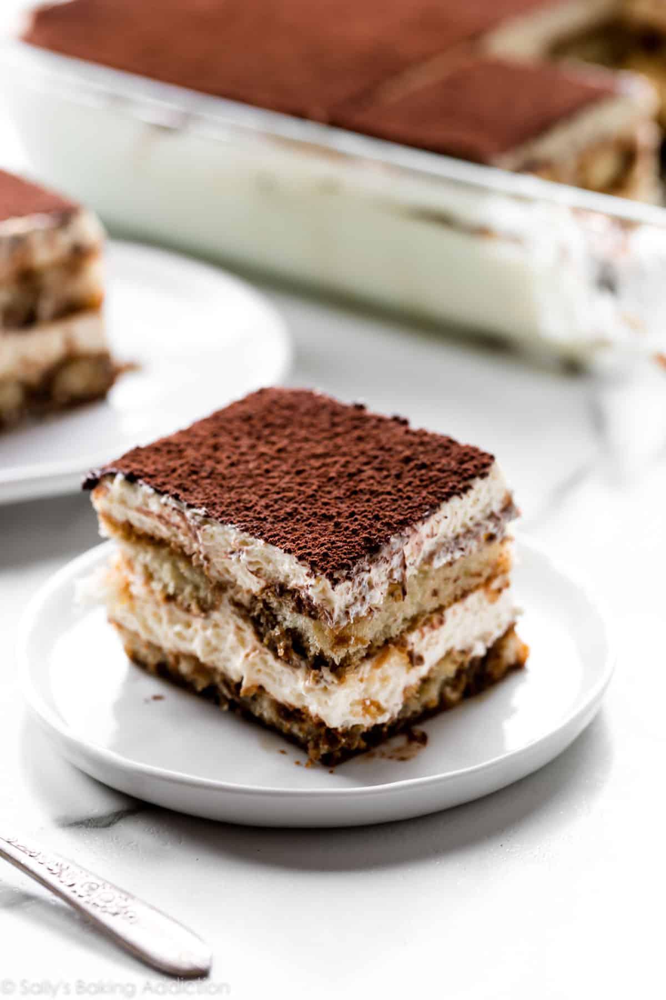

Tiramisu

Description
Tiramisu is a classic Italian dessert that has become popular all over the world. It is typically made with ladyfingers dipped in coffee and layered with a creamy mixture of mascarpone cheese, eggs, sugar, and sometimes liquor such as Marsala wine or rum.
The name "tiramisu" means "pick me up" or "lift me up" in Italian due to its energizing ingredients like caffeine from the coffee and alcohol from the liquor. The layers are often dusted with cocoa powder for added flavor and decoration. Tiramisu can be served chilled or at room temperature after being refrigerated for several hours to allow it to set properly.
Ingredients
- 6 egg yolks
- 3/4 cup granulated sugar
- 2/3 cup whole milk mascarpone cheese
- 1 and 1/4 cups heavy whipping cream
- 2 cups strong brewed coffee or espresso, cooled
- Savoiardi biscuits (ladyfingers)
(Note: You can also add Marsala wine or dark rum for flavor if desired)
Steps
- Brew strong coffee or espresso and set it aside to cool.
- In a large bowl, beat egg yolks and sugar together until they become pale yellow in color.
- Add mascarpone cheese to the egg mixture. Mix well until smooth and creamy.
- In another bowl, whip heavy cream until stiff peaks form. Then gently fold it into the mascarpone mixture.
- Dip ladyfingers (savoiardi biscuits) one by one into cooled coffee or espresso. Don't soak them for too long as they may fall apart easily.
Note: You can also add Marsala wine or dark rum to your coffee/espresso if desired.
- Arrange a single layer of soaked ladyfingers at the bottom of an eight-inch square pan or dish.
Note: Make sure you pack them tightly so that there are no gaps between them.
- Spoon half of the cream mixture over the top of ladyfingers layer then spread it evenly using spatula/knife.
Note: Make sure you cover all edges properly while spreading.
-
Repeat step six with another layer of soaked ladyfingers followed by remaining half portion of cream on top.
- Cover with plastic wrap and refrigerate for at least two hours (or overnight) so that tiramisu sets up properly.
Note: Do not dust cocoa powder yet as it absorbs moisture from air & loses its flavor/texture quickly when exposed outside for longer duration. So, it is better to dust just before serving time.
- Before serving, dust the top of tiramisu with unsweetened cocoa powder.
Note: You can use a fine mesh sieve or strainer to ensure even distribution of cocoa powder over top surface.
-
Slice and serve chilled. Enjoy!
I hope this helps!